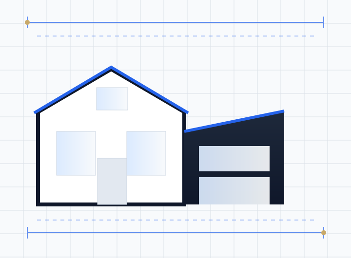

Published 2026 UK guides put a two storey extension at around £1,900 to £2,900 per m² of total floor area across both floors. That means roughly £66,000 to £102,000 for 30 m² (15 m² on each floor) and £88,000 to £136,000 for 40 m², fully finished including fees, with London and the South East typically 20 to 35% higher. A two storey extension usually costs about 1.5 times a single storey extension of the same footprint while doubling the space. Most need planning permission, because permitted development only allows two storey rear extensions up to 3 m deep and at least 7 m from the rear boundary.
If you need more bedrooms as well as a bigger kitchen, a two storey extension is often the best value way to get both. The foundations and roof, two of the biggest costs in any extension, are only built once, so the second floor adds space for much less per square metre than the first.
This guide covers two storey extension costs for 2026, what drives the price, planning permission and the rules councils apply, building regulations, and how it compares with a single storey extension or a loft conversion. It covers England.
Key takeaways
- Typical 2026 cost: about £1,900 to £2,900 per m² of total floor area, before London uplift.
- A two storey extension gives twice the space for roughly 1.5 times the single storey cost.
- Budget 10 to 15% for professional fees and a further 10% contingency.
- Permitted development allows two storey rear extensions up to 3 m deep and 7 m from the rear boundary; most designs need planning permission.
- Councils focus on neighbours' light, overlooking and keeping the extension subservient to the house.
- Structural design, fire escape from the new bedrooms and the Party Wall Act all need planning early.
How much does a two storey extension cost in 2026?
| Total floor area (both floors) | Shell and build | Fully finished including fees |
|---|---|---|
| 20 m² | £38,000 to £58,000 | £45,000 to £70,000 |
| 30 m² | £57,000 to £87,000 | £66,000 to £102,000 |
| 40 m² | £76,000 to £116,000 | £88,000 to £136,000 |
| 50 m² or more | £95,000 to £145,000 | £110,000 to £170,000 |
These figures are national averages. Add around 20 to 35% in London and the South East. Quantity surveyors have also reported typical two storey rates rising in recent years, with some quoting around £2,150 per m² as a typical figure, so get current local quotes before you commit.
Two storey vs single storey extension cost
Our house extension cost guide puts a standard single storey extension at about £1,800 to £3,000 per m². A two storey extension costs only slightly more per m² because the second floor shares the same foundations and roof. In practice:
| Single storey, 15 m² footprint | Two storey, 15 m² footprint | |
|---|---|---|
| Floor area gained | 15 m² | 30 m² |
| Typical uses | Bigger kitchen or living space | Bigger kitchen plus bedroom and en-suite |
| Relative cost | 1x | About 1.5x |
| Planning | Often permitted development | Usually a planning application |
If you mainly need extra bedrooms and have usable roof space, a loft conversion may be cheaper still. See loft conversion cost and the types of loft conversion.
What affects the cost of a two storey extension
- Size and shape. Simple rectangular footprints are cheapest. Corners and wrap around shapes add cost.
- Structure. Opening up the rear wall on two floors needs steel beams and padstones designed by an engineer.
- Roof design. Matching the existing pitched roof costs more than a flat roof, but planners usually prefer it.
- Ground conditions. Clay soil, nearby trees or drains can mean deeper foundations.
- Kitchens and bathrooms. The kitchen fit-out and an upstairs en-suite are big line items.
- Glazing. Large sliding doors and rooflights add significantly.
- Party wall work. Surveyors' fees where the extension is on or near a shared boundary.
- Location. Labour and materials cost more in London and the South East.
Fees and other costs to budget for
Allow 10 to 15% on top of the build cost for design drawings, structural calculations, building control, planning fees and party wall surveyors, plus a 10% contingency. For drawing fees specifically, see our architectural drawings cost guide and architect cost for a house extension.
Do you need planning permission for a two storey extension?
Usually yes. Permitted development allows an extension of more than one storey at the rear only if:
- It extends no more than 3 m beyond the original rear wall.
- It is at least 7 m from the rear boundary.
- The roof pitch matches the existing house as far as practicable.
- Upper floor side windows are obscure glazed and non-opening below 1.7 m.
- Eaves are no higher than 3 m within 2 m of a boundary, and no higher than the existing eaves.
Two storey side extensions are never permitted development, because side extensions must be single storey. Many rear gardens are too short for the 7 m rule, so most two storey extensions go through a householder planning application. See permitted development vs planning permission and planning permission for a house extension.
What councils look for
- The 45 degree rule. Many councils check that the extension does not cut a 45 degree line from the nearest neighbouring window, to protect light.
- Overlooking. Upper windows facing neighbours may need obscure glazing or moving.
- Subservience. Side extensions are often expected to be set back from the front wall with a lower ridge.
- Gap to the boundary. Some councils ask for a gap beside two storey side extensions to avoid a terraced effect.
- Garden and parking. Enough garden space and parking should remain.
Accurate drawings showing these relationships make a big difference. Our guide to planning drawings for a house extension explains what to submit, and how long planning permission takes covers timescales.
Building regulations for a two storey extension
- Structure: foundations, steel beams, first floor joists and roof designed and calculated by a structural engineer.
- Fire safety: first floor habitable rooms need an emergency escape window or a protected route, plus interlinked smoke alarms.
- Energy: insulation and glazing to current Part L standards.
- Ventilation: extract fans to the kitchen and bathrooms, and background ventilation to bedrooms.
- Drainage: new connections for the en-suite and kitchen, and a build over agreement if near a public sewer.
- Sound: where the extension creates new rooms next to living spaces, insulation between floors helps comfort.
See building regulations for a house extension and building regulations drawings explained.
How a two storey extension project runs
- Measured survey of the house and garden. See measured building survey cost.
- Design options and planning drawings, then a householder application, usually decided within 8 weeks.
- Party wall notices to neighbours where needed.
- Structural design and building regulations drawings, used for builder tenders.
- Construction, typically several months on site, depending on size and finish.
Ways to keep the cost down
- Keep the footprint simple and rectangular.
- Stack the upstairs bathroom over the kitchen to share drainage runs.
- Get detailed building regulations drawings before tendering so builders price the same scope.
- Choose standard window and door sizes.
- Fix the kitchen and bathroom layouts before construction to avoid costly changes on site.
How we help
We prepare planning and building regulations drawings for two storey rear and side extensions, testing the design against your council's 45 degree and subservience rules before you apply. Our house extension drawings service covers each stage. We work remotely across England, including London, Birmingham, Manchester, Leeds and Sheffield. For a ground floor only option, compare a wrap around extension. Send us your address and ideas for a fixed quote.
Frequently asked questions
How much does a two storey extension cost in 2026?
Published 2026 UK guides suggest about £1,900 to £2,900 per m² of total floor area. A 30 m² two storey extension typically costs £66,000 to £102,000 fully finished, with London and the South East around 20 to 35% higher.
Is a two storey extension cheaper per m² than a single storey?
Yes. The foundations and roof are shared, so a two storey extension usually costs about 1.5 times a single storey on the same footprint while giving twice the floor space.
Do you need planning permission for a two storey extension?
Usually yes. Permitted development only allows two storey rear extensions up to 3 m deep and at least 7 m from the rear boundary. Two storey side extensions always need planning permission.
What is the 7 metre rule for extensions?
Under permitted development, an extension of more than one storey must be at least 7 m from the rear boundary of the property opposite the rear wall being extended.
What is the 45 degree rule?
It is a test many councils use to protect neighbours' light. A line is drawn at 45 degrees from the nearest neighbouring window, and the extension should not cross it.
How long does a two storey extension take to build?
Allow a few months for design, planning and building regulations, then typically several months on site depending on size, structure and finishes.